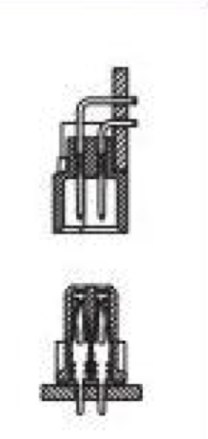
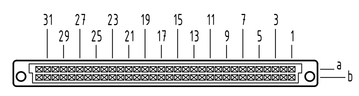
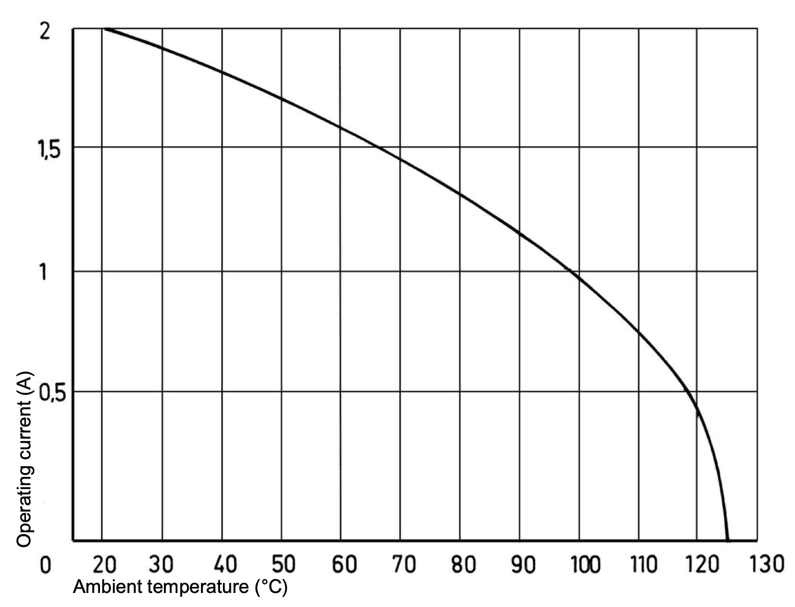

A Bus is a Bus, Of Course, Of Course
One of the defining features of the project is using a modular backplane in a subrack enclosure. I figured we can dive into some of the details so far.
Design Principles
When I was looking at how kha structured the bus, I decided to pull a few ideas from what they did:
- Leverage DIN 41612 for the physical format of the bus. This is a very well understood and documented specification, and it has been battle-tested over many decades.
- Simplify the backplane routing requirement.
- Carry both +12V and +5V. Can be locally regulated down to the needed voltage.
Physical Connector
I decided to use the DIN 41612 connector because it is an absolute tank. It has been used, at least, since the late 1980s in dozens and dozens of critical systems. It's also relatively inexpensive and not very finicky to work with.


While kha used a 32-pin connector (2 rows of 16 pins), I've decided to use a 64-pin connector. The reason is that this allows me to run many more ground lines across the connector, and also double up the power. I am using the DIN 41612 connector in it's type B configuration. This means it has 2 rows of pins/contacts, labeled "a" and "b". The numbering scheme is basically A1/B1-A32/B32.
There are many other arrangements that are used in other systems, and many have 3 or 4 rows, but this is far more than enough for this setup. It also keeps it from even starting to look like VMEbus, which uses a 3 row 96-pin version.

In the type B configuration, the receptacle (female) connector is on the backplane and the plug (male) is on the card at a right angle. While you can get connectors reversed, I didn't see any reason to deviate from this arrangement.
The connectors also have 2.8mm holes for M2.5 screws that allow them to be very securely attached to the PCBs, without needing to put any strain on the solder joints.
Signal Assignment
To simplify the routing enormously, I've decided to keep the "a" and "b" rows identical. This allows for the bus to be routed straight across the backplane. The "signals" can be broken down into a few groups:
- Ground
- Power rails, both +12V and +5V
- CAN bus (differential encoding)
- User-defined signals (BUS_*)
This breaks down to this layout, where ground is heavily interspersed with the signals to help ensure reasonable signal integrity.
| Pin # | Row A | Row B |
|---|---|---|
| 1 | GND | GND |
| 2 | +12 | +12 |
| 3 | +12 | +12 |
| 4 | +5 | +5 |
| 5 | +5 | +5 |
| 6 | GND | GND |
| 7 | CAN_H | CAN_H |
| 8 | GND | GND |
| 9 | CAN_L | CAN_L |
| 10 | GND | GND |
| 11 | BUS_00 | BUS_00 |
| 12 | BUS_01 | BUS_01 |
| 13 | GND | GND |
| 14 | BUS_02 | BUS_02 |
| 15 | BUS_03 | BUS_03 |
| 16 | GND | GND |
| 17 | BUS_04 | BUS_04 |
| 18 | BUS_05 | BUS_05 |
| 19 | GND | GND |
| 20 | BUS_06 | BUS_06 |
| 21 | BUS_07 | BUS_07 |
| 22 | GND | GND |
| 23 | BUS_08 | BUS_08 |
| 24 | BUS_09 | BUS_09 |
| 25 | GND | GND |
| 26 | GND | GND |
| 27 | GND | GND |
| 28 | +5 | +5 |
| 29 | +5 | +5 |
| 30 | +12 | +12 |
| 31 | +12 | +12 |
| 32 | GND | GND |
Power Capacity and Derating
One of the things I wanted to do is be able to carry 6-8A of current on both the +12V and +5V rails. The standard for the connector specifies 2A per pin, but you also need to derate this number for use in the real-world. If we look at Harting's derating curve, we get this:

Most standards talk about "room temperature" at 20C, but it's typically necessary to actually use a higher temperature in the real world. The resistance of the copper along with all the other components will raise the ambient temperature. If we assume 35C (95F), then we can see on the curve that we can expect about 1.8A. As I showed above, we are using 8 pins per rail, which gives us a safe load capacity of 14.4A, well above what we are targeting.
We are actually safe, for this definition of safe at least, up to 98C (208F), which is a temperature unlikely to occur in my house, even without air conditioning in Seattle.
PCB Layout
The layout is actually pretty simple, and only needed 2 layers for the initial run. Depending on what signal integrity looks like, I may convert to 4 layers, but because I was able to keep the entire back as a ground, basically, I have reasonable confidence. The top of the board looks like this:


You can see in the design how everything goes across horizontally, which means there's no need to really "route" anything creatively. The ground is tied together on both sides as the plated through holes connect the two sides.
It has a 8C8P connector for CAN, two Cliff FCR7350 4mm safety banana jacks for +12V and test points that can be used to check power and signals. I also put all the signals on the silkscreen.
All mechanicals are in alignment with Eurocard and VMEbus standards.
You can find the KiCad files in GitHub.